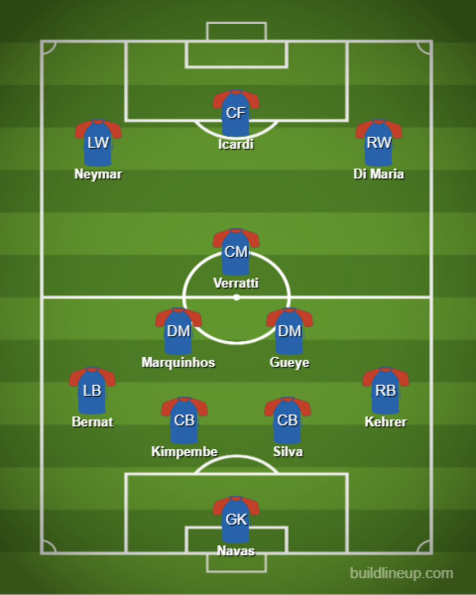
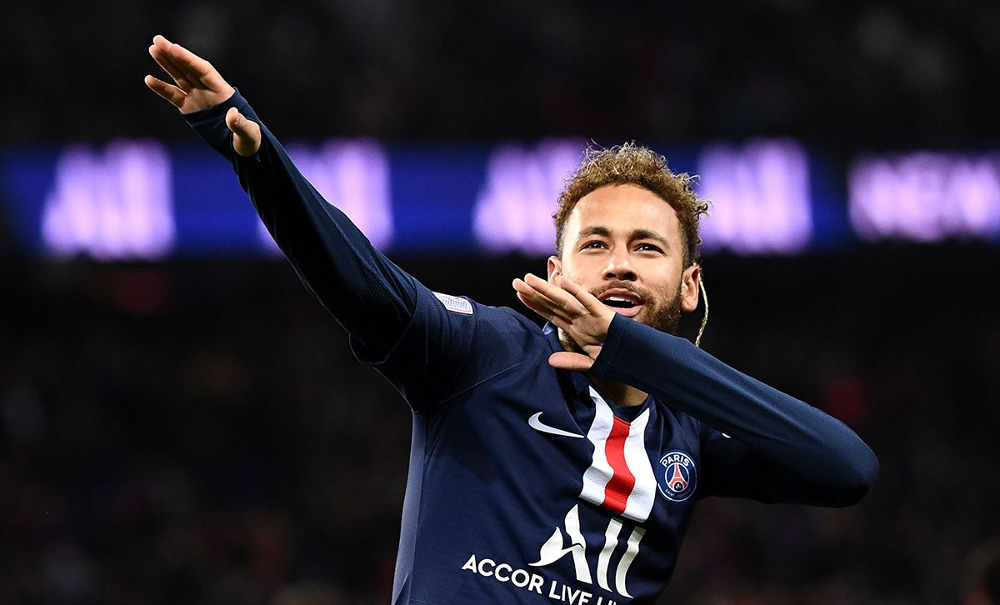

PSG are well known for their lackluster performances in the Champions League. The Parisians reached the quarter finals every season between 2012/13 to 2015/16. Since then they have made three consecutive exits in the round of 16. In 2016/17 they blew a 4-0 lead after the first leg to Barcelona in “La Remontada”. In 2017/18 they were thoroughly outclassed by the defending champions Real Madrid in a 5-2 loss on aggregate. Last season they jumped out to a 2-0 lead against Manchester United after the first leg and returned home for the second match.
Inexplicably they collapsed in a 3-1 defeat which saw United advance on the away goal rule and made Ole Gunnar Solskjaer look like the second coming of Alex Ferguson.
The financial might of the kingdom of Qatar has allowed them to break the bank for Neymar, Kylian Mbappe, Angel Di Maria, Zlatan Ibrahimovich and so many more. Talent has never been an issue for PSG, it has been a lack of identity and perhaps a lack of ample competition in Ligue 1 to sharpen their teeth with.
This would be the year to end PSG’s underperformance. On paper they have an easy draw with Real Madrid, Barcelona, Juventus, Manchester City and Bayern Munich on the opposite side. They play this year’s Cinderella club: Atalanta. The Serie A minnow finished in 3rd place in Italy and are the top scoring team in Europe with 98 goals domestically.
Thomas Tuchel has the difficult job of managing the egos of Neymar, Mbappe, Mauro Icardi and Di Maria among others. The pressure will be on PSG to reach its potential and they may benefit from the unusual circumstances of playing behind closed doors in a neutral location. The Paris club has become obsessed with winning the Champions League, now it’s time to prove themselves.
Even with their injury problems, PSG will still have the most talent on the pitch when they face Atalanta. Their opponent will line up in a 3-4-1-2 or 3-4-2-1 heavily utilizing wing play and the Italians will prefer an open and chaotic game. I expect Tuchel to go with his typical 4-3-3 but expect his midfield to be more cautious moving forward to counter the high flying Atalanta attack. Marquinhos and Idrissa Gueye may end up playing in a double pivot to provide more stability making the formation a 4-2-1-3.
The trio of Neymar, Icardi and Di Maria is still one of the most formidable attacking tridents in Europe. The PSG fullbacks are typically aggressive but will have to deal with a fluid attack and wingbacks. Atalanta press their opponents heavily in midfield so PSG’s midfielders will need to be careful in possession. At the back, Presnel Kimpembe and Thiago Silva are an experienced and reliable center back pairing.
I expect this to be one of the most back and forth matches in the Champions League. Both clubs are capable of possessing the ball, attacking and counter-attacking. This is without a doubt a match PSG can lose, but I expect them to come out motivated.

Player To Watch:
Neymar (Age: 28; Position: FWL):
Neymar has been desperate to prove he’s the world’s best player since leaving Barcelona in 2017. PSG bought him for $244 million, a fee that has overshadowed his every move in the French capital. He has had a difficult relationship with the PSG ultras and has been linked back to Barcelona since 2019. But in 2020 he seemed to finally become comfortable with himself and PSG. His partnership with Mbappe has been a joy to watch and he will be in Paris for at least one more season.
The absence of Mbappe against Atalanta will put the onus on Neymar to create. On his day, Neymar is one of the top players in the world. Atalanta will be keying on him, which may play into his hands. Neymar is known for his dribbling and flair but his ability to create for others is underrated. The Brazilian averaged 0.44 xA/90 and 6.56 SCA/90 in Ligue 1 this season. The quarter finals are just one-leg this year due to COVID-19 which only adds to the pressure. But don’t pay attention to the noise, I expect Neymar to prove the haters wrong and continue his outstanding season.

Prediction: Finals
Cup competitions are extremely difficult to predict, especially now that the quarter and semi finals are just one legged affairs. But PSG will be the most talented team in the quarter and semi finals. If they get past Atalanta they would either face RB Leipzig or Atletico Madrid, who would be tough tests but PSG would still be favored to win.
I’m not exactly sure why I’m so high on this particular iteration of PSG. Maybe it was the way they played against Real Madrid in the group stage with a 3-0 win at home and a 2-2 draw away. They seem different this year. Their talent is undeniable and when Mbappe does reach full fitness they will have arguably the best attack in the world.
If they do reach the final I think they will face Bayern Munich. I would have to give a slight edge to the German champions simply because they’ve been there before. The biggest obstacle for PSG in the quarter and semi finals is themselves. Mentally they have faced a roadblock in the Champions League, but I think this is the year they will break through. Neymar and Mbappe have matured and they have an impressive midfield with Gueye, Marquinhos and Verratti. This could be PSG’s best chance at a Champions League title. Either way, you should tune in, history has shown us that PSG and Champions League knockout ties produce fireworks.